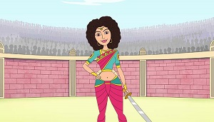

Truth
Truth is the same what the world sees
Vikram came straight to the cremation ground. The Yogee asked him - "Come
Vikram, Have you brought that dead body?" Vikram told him everything what
happened with him. The Yogee said - "But I cannot do anything without that
dead body. Time is short. If you will be late then the Muhoort will pass, so
bring him soon." Vikram said - "But he tells too many stories." "Keep listening,
and bring him here." Vikram went back to the same tree, pulled him from the
tree, put him on his shoulder and continued his journey. Vaitaal said - "I knew
that you will come, because you need me very badly." and he laughed at
himself. "Why do you laugh?" "I am laughing, because sometimes even learned
people cannot value the time." Vikram asked - "What do you mean by that?"
Vaitaal said - "Listen, I tell you a story--
A trader, named Sumant, lived in Kaling Desh. He had a handsome son, named
Hemant. He also went country to country to trade along with his father. Once
he went to Gaandhaar Desh for trading. They showed their materials to its
king in his court. The king asked him to show it to princess in his inner
apartments. Hemant went in his inner apartment. Going in inner apartment was
not a new thing for him, he often used to go in kings' inner apartments. He
was brought to the inner apartments under strict watch.
There he started showing his materials to mother queen. At the same time
princess Chandraprabhaa also came there. Hemant got stunned to see her. He
had been to many inner apartments, but he has never seen such a beauty
elsewhere. He got attracted to her. By chance the princess also fell in love
with him. After selling his things, he came out of the inner apartments, but
he was not able to forget the princess' beautiful face.
Hey Vikram, Now He didn't like trading at all, he always thought about the
princess and how to see the princess again. There was a strict watch in her
apartment, he could not go there. He went around the palace several times in
the hope that he might see her once, but all the time he got disappointment.
He did not say a word about his feelings. He refused to go back from
Gaandhaar Desh. Then one of his helpers went to inform his father, and rest
remained with him. He was staying near the main gate of the palace.
Now, there came a Taantrik, named Bhootdev, after learning Tantra. One of
Hemant's servants went to him hearing his fame. He described his master's
condition to him. Bhootdev came to see him and understood his mind with the
power of his Mantra. He asked him - "Are you really restless to see the
princess Chandraprabhaa?" Hemant nodded. He said - "I can arrange the
meeting." Then he gave a Taabeez to Hemant and said to him - "As you will
tie this Taabeez on your body, you will be converted into a fine young woman,
and when you will untie it, you will be returned to your original form. That is
how you can see her." "But how will I go inside?"
Bhootdev said - "I have a way." He converted himself into an old man and tied
the Taabeez on Hemant's arm (this converted him into a beautiful young
woman), and both went to the king. He said to the king - "Mahaaraaj, You are
very kind. I am a poor old Braahman, I wish to go for pilgrimage. This is my
daughter, she will not be able to go with me, so if you keep her, I will be able
to earn some Punya. When I will come back, I will take her."
The king agreed, he sent that woman to his daughter in his inner apartments.
Bhootdev told Hemant that he would come back in a week time. Till then he
can live with her, then he will see further. In the inner apartments,
Chandraprabhaa got a new friend. When they were alone, he came into his
original form. The princess got very happy to see him. Both were happy,
nobody could notice anything. When that week had passed, none of them could
know. Bhootdev had come back to take him, but Hemant requested him to give
him one more week. Bhootdev agreed and Hemant stayed back there for one
more week.
O Vikram, It so happened that the king's minister's son got attracted to
Hemant's woman form. He wanted to marry her, so he requested the king
that he should be married to her. King asked him to wait till Bhootdev comes.
Now that another week was also over. Bhootdev had come again to take him.
The king proposed Bhootdev for his daughter for his minister's son. Bhootdev
said politely - "Mahaaraaj, I will tell you after asking my daughter."
Hemant was brought in his woman form. Bhootdev asked her about the
proposal, he clearly refused it. Now Hemant had come out of the palace. He
told Bhootdev that the princess is pregnant. Bhootdev got happy to hear this,
as he can get married to her on this basis only. Hemant was satisfied.
Bhootdev went away. Then Hemant went to the king and asked the hand of
Chandraprabhaa. The king clearly refused. at this Hemant said - "The
princess is expecting my child." Still the king didn't agree.
Hemant got disappointed with king's answer. When the king asked
Chandraprabhaa, she told him everything clearly, still the king refused to
marry her to Hemant. Hemant go so much shocked by his refusal, that he
committed suicide. Now you judge, "was the king not responsible for this sin?
Was the king not worthy to be punished?
Vikram thought for a while then said - "No Vaitaal, The king did right."
"How." "Listen, Whatever this world sees, only that is truth. Whatever is
done at the back, is not considered the truth. That is why, it was all right
for the king to refuse go Hemant to marry his daughter. "Then why did
Hemant commit suicide? Because he himself was at fault. The minister's son
was also attracted to Hemant's woman form, then why didn't he commit
suicide? He lived very well. This is my justice - that whatever sees the world,
that is the only truth, rest is a lie."
Vaitaal said - "You are right, Vikram." He laughed heartily and ran away from
his shoulder. This time Vikram didn't feel bad, he again pulled Vaitaal from
the tree, put him on his shoulder and started walking. Vaitaal again started
speaking - "O Vikram, Listen further. Thus Hemant died. When the princess
knew it, she became very sad. At the same time she gave birth to a son. The
king gave that boy to a woman and he got ready to marry her. One prince got
ready to marry her, so she was married to him. Both started living happily.
After some time, Hemant's son grew old and came to see his mother but she
refused to accept him as her son.
Now tell Vikram, What type of form is this of a mother? Is this not a sin?"
Vikram said - "This son of the princess was illegitimate, how could she accept
him as her son?" Vaitaal asked - "Then was it a womanish behavior?" "Yes"
"You are insulting the whole woman class." and he again ran away from his
shoulder. Vikram couldn't hold him back this time, but he had to take him to
that Yogee, so he went back again, put him on his shoulder and started his
journey.
| Previous | Index | Next |